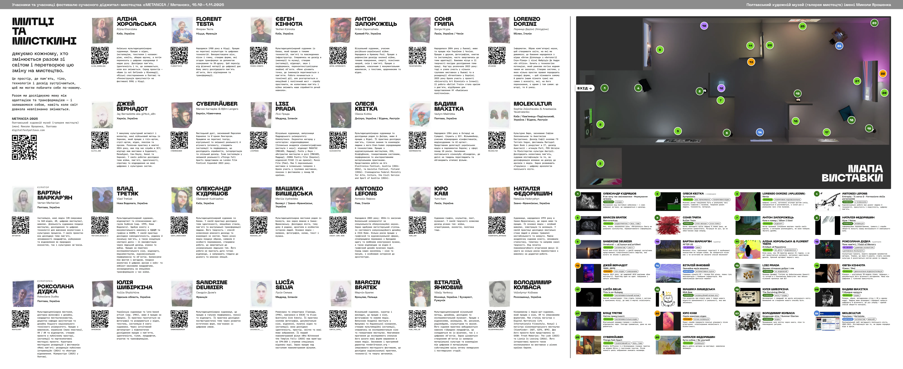

Міжнародний фестиваль цифрового мистецтва International digital art festival
Що відбувається з нами, коли світ змінюється швидше, ніж ми встигаємо його осмислити? What happens to us when the world changes faster than we can make sense of it?
Полтавський художній музей (галерея мистецтв) імені Миколи Ярошенка, Полтава, Україна. Mykola Yaroshenko Poltava Art Museum (Art Gallery), Poltava, Ukraine.

@cat_ngo_poltavaНатисніть, щоб збільшити ⤢ Click to enlarge ⤢

METANOIA — це простір розмови про трансформацію людини та її досвіду в реальності, яка постійно змінюється. Назва фестивалю походить від давньогрецького поняття metanoia — глибокої зміни мислення, світосприйняття та внутрішнього стану. Йдеться не просто про зміну поглядів, а про момент, коли попереднє уявлення про себе, інших і світ перестає відповідати дійсності. Коли звичні пояснення більше не працюють, а нові ще тільки формуються.
Метаноя не обов’язково веде до полегшення, гармонії чи остаточного розуміння. Трансформація може бути болісною, суперечливою, непомітною або незавершеною. Вона може означати втрату, адаптацію, переосмислення власної ідентичності або відмову від того, що колись здавалося незмінним. Це не стільки результат, скільки процес — рух між тим, ким ми були, ким стали і ким ще можемо бути.
Сьогодні цей процес відбувається не лише всередині окремої людини. Змінюється політичний і соціальний порядок, технології перебудовують комунікацію, інформаційне середовище впливає на нашу увагу й пам’ять, а звичні уявлення про безпеку, близькість, дім і майбутнє стають нестійкими. Великі події дедалі частіше проникають у повсякденність, визначаючи наші рішення, стосунки й навіть відчуття часу.
Для України повномасштабна війна зробила ці зміни особливо гострими. Вона змінила не лише фізичний простір, а й спосіб, у який ми відчуваємо власне життя: його крихкість, переривчастість, цінність і невизначеність. Ми вчимося жити в реальності, якої не обирали, одночасно намагаючись зберегти зв’язок із собою, іншими людьми, культурою та майбутнім.
Водночас METANOIA не пропонує війни як обов’язкової теми для художнього висловлювання. Ми не очікуємо, що кожна робота безпосередньо говоритиме про бойові дії, руйнування чи втрату. Особистий досвід не зводиться до однієї теми, а людина не може бути визначена лише обставинами, у яких вона опинилася. Мистецтво може говорити про тіло, пам’ять, самотність, любов, технології, ідентичність, повсякденність або уявлення про майбутнє. Важливо інше: як змінюється наше сприйняття цих речей і що відкривається в момент цієї зміни.
Цифрові технології в межах METANOIA — не просто сучасні інструменти для створення зображень. Вони є частиною середовища, у якому ми живемо, мислимо, спілкуємося та конструюємо власну картину світу.
Віртуальна й доповнена реальність, відеоарт, генеративні зображення, інтерактивні системи, цифрове моделювання та інші медіа змінюють можливості художнього висловлювання. Вони дають змогу працювати з простором, часом, рухом, даними, присутністю та відсутністю, створювати досвіди, які не обмежуються звичною площиною зображення.
Водночас технології не є нейтральними. Вони впливають на те, що ми бачимо й пам’ятаємо, як сприймаємо інформацію, кому довіряємо та де проводимо межу між реальним і створеним. Штучний інтелект, цифрові копії, віртуальні середовища й алгоритми ставлять нові запитання про авторство, людську суб’єктність, достовірність і відповідальність.
Тому цифрове мистецтво сьогодні — це не лише демонстрація технічних можливостей. Це спосіб критично досліджувати сучасність, експериментувати з формами сприйняття й випробовувати межі того, що ми вважаємо реальністю.
Історія фестивалю розпочалася у 2025 році з проєкту «Контури відновлення. Міжпростір». За підтримки невеликого фінансування в межах програми шерингу «Львів — Молодіжна столиця України» та за участі громадської організації Nova United у Полтаві відбувся фестиваль сучасного цифрового мистецтва в умовах тотальної темряви.
Протягом тижня п’ять поверхів обласної бібліотеки стали простором зустрічі художників, цифрових медіа, освітніх практик і глядачів. Лекторії, майстер-класи, воркшопи та мистецькі проєкти дали можливість не лише побачити цифрове мистецтво, а й познайомитися з інструментами та підходами, за допомогою яких воно створюється. Цей досвід став важливим прецедентом для культурного середовища Полтави й точкою відліку для подальшого розвитку фестивалю.
У 2026 році METANOIA продовжує цю історію, водночас змінюючи формат. Фестиваль переходить до великого виставкового простору — «білого куба» Полтавського художнього музею (галереї мистецтв) імені Миколи Ярошенка. У центрі уваги цього разу — мистецькі роботи та досвід їхнього сприйняття.
Ця зміна не означає відмови від освітньої складової. Вона переходить безпосередньо в художні практики. Знайомлячись із творами, глядач може побачити, як працюють різні цифрові медіа, які можливості вони відкривають і як митці використовують їх для дослідження складних тем. Так фестиваль стає місцем не лише для перегляду, а й для розширення уявлень про сучасне мистецтво та інструменти, що формують його сьогодні.
У програмі METANOIA 2026 — 26 робіт, створених 28 митцями з України та інших країн. Міжнародна частина програми представлена художниками з Італії, Іспанії, Франції, Німеччини та Польщі.
Це не спроба звести різні художні практики до єдиної відповіді на спільне запитання. Навпаки, фестиваль створює можливість побачити, як різні культурні контексти, досвіди та мови мистецтва перетинаються, розходяться й доповнюють одне одного. Те, що для одного глядача є особистим переживанням, для іншого може виявитися знайомим досвідом або несподіваною перспективою.
Для Полтави така зустріч має особливе значення. Вона включає локальне мистецьке середовище в ширший міжнародний процес, дає можливість познайомитися з актуальними художніми практиками без необхідності залишати місто та підтримує зв’язки між українськими й закордонними митцями. У цьому сенсі фестиваль — не просто презентація робіт, а створення простору для культурного обміну, співприсутності та нових способів бачення.
METANOIA не прагне дати готові відповіді на запитання про те, ким ми стаємо в мінливому світі. Вона пропонує зупинитися й подивитися на зміни, які часто залишаються непоміченими, доки не починають визначати наше життя.
Що відбувається з пам’яттю, коли змінюється середовище? Чи залишається ідентичність незмінною, якщо змінюються умови існування? Де проходить межа між адаптацією та втратою себе? Як технології змінюють наше уявлення про людське? І чи можливо уявити майбутнє, не повертаючись постійно до досвіду минулого?
Ми запрошуємо глядача не шукати в кожній роботі ілюстрацію до назви фестивалю, а дозволити собі індивідуальний досвід зустрічі з мистецтвом. Не всі твори мають бути зрозумілими одразу. Не кожне запитання потребує відповіді. Іноді достатньо помітити, що знайомий образ викликає нову реакцію, звичний спосіб мислення дає тріщину, а реальність відкривається з іншого боку.
METANOIA — це простір, у якому зміна стає предметом уваги, а мистецтво допомагає її побачити, відчути й осмислити.
Можливо, світ не стає зрозумілішим після такої зустрічі. Але змінюється точка, з якої ми на нього дивимося.
METANOIA is a space for conversation about the transformation of a person and their experience in a reality that is constantly changing. The festival takes its name from the ancient Greek concept of metanoia — a profound change of thinking, worldview and inner state. It is not simply a change of opinion, but the moment when a previous idea of oneself, of others and of the world no longer corresponds to reality. When familiar explanations stop working, and new ones are only beginning to take shape.
Metanoia does not necessarily lead to relief, harmony or final understanding. Transformation can be painful, contradictory, imperceptible or unfinished. It can mean loss, adaptation, rethinking one’s own identity, or letting go of what once seemed unchangeable. It is less a result than a process — a movement between who we were, who we have become and who we might yet be.
Today this process is not happening only within an individual. The political and social order is changing, technologies are restructuring communication, the information environment shapes our attention and memory, and familiar ideas of safety, closeness, home and the future are becoming unstable. Major events increasingly enter everyday life, shaping our decisions, relationships and even our sense of time.
For Ukraine, the full-scale war has made these changes especially acute. It has changed not only physical space, but also the way we feel our own lives: their fragility, discontinuity, value and uncertainty. We are learning to live in a reality we did not choose, while trying to preserve our connection with ourselves, other people, culture and the future.
At the same time, METANOIA does not propose war as an obligatory subject for artistic expression. We do not expect every work to speak directly about combat, destruction or loss. Personal experience cannot be reduced to a single theme, and a person cannot be defined solely by the circumstances in which they find themselves. Art can speak about the body, memory, loneliness, love, technology, identity, everyday life or visions of the future. What matters is something else: how our perception of these things changes, and what opens up at the moment of that change.
Within METANOIA, digital technologies are not just contemporary tools for making images. They are part of the environment in which we live, think, communicate and construct our own picture of the world.
Virtual and augmented reality, video art, generative images, interactive systems, digital modelling and other media are changing the possibilities of artistic expression. They make it possible to work with space, time, movement, data, presence and absence, and to create experiences that are not confined to the familiar flat surface of an image.
At the same time, technologies are not neutral. They influence what we see and remember, how we perceive information, whom we trust and where we draw the line between the real and the made. Artificial intelligence, digital copies, virtual environments and algorithms raise new questions about authorship, human agency, authenticity and responsibility.
That is why digital art today is not merely a demonstration of technical capabilities. It is a way to critically examine the present, to experiment with forms of perception and to test the limits of what we consider reality.
The festival’s story began in 2025 with the project “Contours of Restoration. Interspace”. With a small grant from the sharing programme “Lviv — Youth Capital of Ukraine” and with the participation of the NGO Nova United, Poltava hosted a festival of contemporary digital art amid total blackouts.
For a week, five floors of the regional library became a meeting place for artists, digital media, educational practices and audiences. Lectures, master classes, workshops and art projects made it possible not only to see digital art, but also to get to know the tools and approaches used to create it. This experience became an important precedent for Poltava’s cultural scene and a starting point for the festival’s further development.
In 2026, METANOIA continues this story while changing its format. The festival moves into a large exhibition space — the “white cube” of the Mykola Yaroshenko Poltava Art Museum (Art Gallery). This time the focus is on the artworks and the experience of perceiving them.
This change does not mean abandoning the educational component. It moves directly into the artistic practices. Encountering the works, visitors can see how different digital media function, what possibilities they open up, and how artists use them to explore complex themes. In this way, the festival becomes a place not only for viewing, but also for broadening one’s understanding of contemporary art and the tools that shape it today.
The METANOIA 2026 programme features 26 works created by 28 artists from Ukraine and other countries. The international part of the programme is represented by artists from Italy, Spain, France, Germany and Poland.
This is not an attempt to reduce different artistic practices to a single answer to a shared question. On the contrary, the festival creates an opportunity to see how different cultural contexts, experiences and languages of art intersect, diverge and complement one another. What is a personal experience for one viewer may prove familiar to another, or open up an unexpected perspective.
For Poltava, such an encounter is especially significant. It brings the local art scene into a broader international process, offers a chance to discover current artistic practices without leaving the city, and strengthens ties between Ukrainian and international artists. In this sense, the festival is not just a presentation of works, but the creation of a space for cultural exchange, co-presence and new ways of seeing.
METANOIA does not seek to give ready-made answers to the question of who we are becoming in a changing world. It invites us to pause and look at changes that often go unnoticed until they begin to define our lives.
What happens to memory when the environment changes? Does identity remain the same if the conditions of existence change? Where is the line between adaptation and losing oneself? How do technologies change our idea of what is human? And is it possible to imagine the future without constantly returning to the experience of the past?
We invite visitors not to look for an illustration of the festival’s title in every work, but to allow themselves an individual experience of encountering art. Not every work has to be understood at once. Not every question needs an answer. Sometimes it is enough to notice that a familiar image provokes a new reaction, a habitual way of thinking cracks, and reality opens up from another side.
METANOIA is a space where change becomes the object of attention, and art helps us to see it, feel it and make sense of it.
Perhaps the world does not become clearer after such an encounter. But the point from which we look at it changes.
Натисніть на фото, щоб відкрити, наблизити й гортати Tap a photo to open, zoom and browse
Питання Questions
Якщо у вас залишилися запитання, пишіть нам на електронну пошту:
If you have any questions, please feel free to contact us by email: